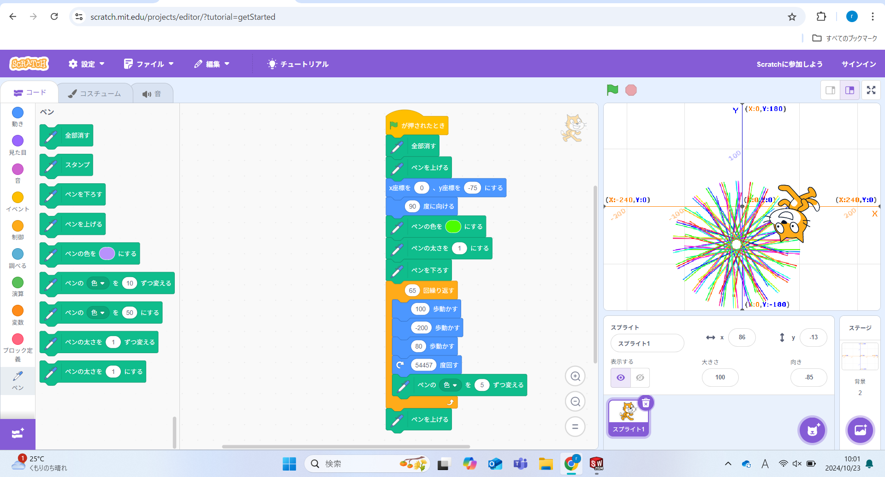
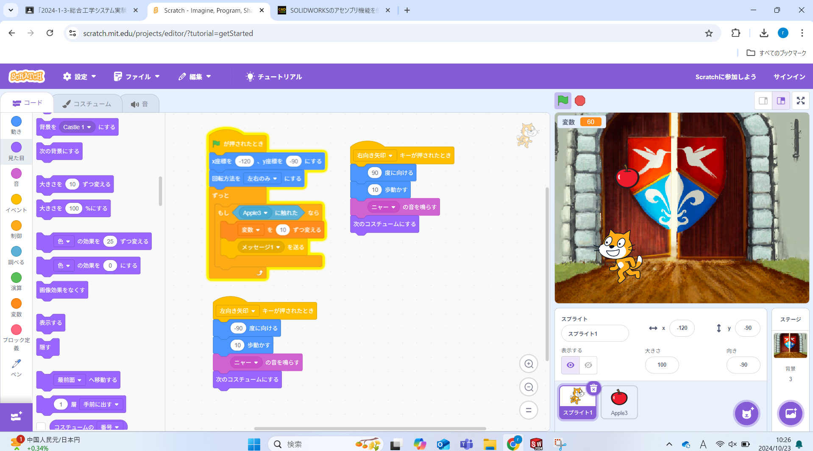

1週目のレポート ： 公大高専１年実習I-1
3b班33番 松原
第1週目
1-1 サイエンスアート

1.内容
スクラッチを使って線を書くプログラムを作成し、様々なパターンの円を描いた。 背景や拡張機能の追加など、Scrtchの基礎的な使い方を学んだ。
2.感想
世界には便利なプログラム学習ツールがあることを知った。
1-2 ゲーム

2.Scrtchを使用したゲームプログラム 猫を移動させ、落ちてきたリンゴに触れると得点が追加されていくゲームのプログラムを作成した。 乱数などを使い、リンゴをランダムな位置、速さで落としていくプログラムや二つのスプライトでプログラムする方法を学んだ。
2.感想
本当にしっかりとしたゲームを作るとなるともっと大変なのだろうが、どのような流れでゲームを作られているのか知った。実際に動かしたときは、自分でもできたという達成感があった。
1-3 ホームページ作成
私のホームページ
1.内容
3.Githubによるホームページ作成 Githubの基本的な機能、操作方法を学んだ。主に index,htmlとrep01.htmlに変更や書き込む操作をした。書き込む前にペンマークを押したり、commit changeを押すことなど気を付けて操作しないといけないところがあるので注意する。
2.感想
初めてホームページ作成をしたが、世の中のホームページはこのような方法で作られているのかと思った。個人的にこれに一番興味がある。
各ページへのリンク
1週目のレポート
2週目のレポート
3週目のレポート
私のホームページ